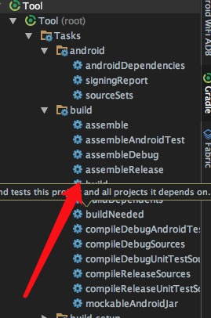

学伴的最新版中为了减少因为Bug导致的应用崩溃，也跟随潮流使用了Tinker作为程序热修复的工具库。
这里记录一下使用Tinker第三方应用平台的简单配置，以飨后人。
Project Gradle
buildscript {
repositories {
jcenter()
}
dependencies {
// TinkerPatch 插件
classpath "com.tinkerpatch.sdk:tinkerpatch-gradle-plugin:1.1.3"
}
}
Module Gradle
dependencies {
// 若使用annotation需要单独引用,对于tinker的其他库都无需再引用
provided("com.tencent.tinker:tinker-android-anno:1.7.7")
compile("com.tinkerpatch.sdk:tinkerpatch-android-sdk:1.1.3")
}
Tinker Gradle
apply plugin: 'tinkerpatch-support'
/**
* TODO: 请按自己的需求修改为适应自己工程的参数
*/
def bakPath = file("${buildDir}/bakApk/")
// 当前版本号 和 build.gradle 相同
def version = "3.0.4"
// 具体的发布时间
def baseInfo = "app-" + version + "-0213-01-55-20"
// 版本
def variantName = "release"
/**
* SDK 位置
* http://tinkerpatch.com/Docs/SDK
*/
tinkerpatchSupport {
/** 可以在debug的时候关闭 tinkerPatch **/
tinkerEnable = true
reflectApplication = true
autoBackupApkPath = "${bakPath}"
appKey = "***"
appVersion = version
def pathPrefix = "${bakPath}/${baseInfo}/${variantName}"
def name = "${project.name}-${variantName}"
baseApkFile = "${pathPrefix}/${name}.apk"
baseProguardMappingFile = "${pathPrefix}/${name}-mapping.txt"
baseResourceRFile = "${pathPrefix}/${name}-R.txt"
/** 若有编译多flavors需求,可在flavors中覆盖以下参数
* 你也可以直接通过tinkerPatchAllFlavorDebug/tinkerPatchAllFlavorRelease, 一次编译所有的flavor补丁包
* 注意的是:除非你不同的flavor代码是不一样的,不然建议采用zip comment或者文件方式生成渠道信息
**/
// productFlavors {
// flavor {
// flavorName = "flavor1"
// appVersion = "${tinkerpatchSupport.appVersion}_${flavorName}"
//
// pathPrefix = "${bakPath}/${baseInfo}/${flavorName}${variantName}/"
// name = "${project.name}-${flavorName}${variantName}"
//
// baseApkFile = "${pathPrefix}/${name}.apk"
// baseProguardMappingFile = "${pathPrefix}/${name}-mapping.txt"
// baseResourceRFile = "${pathPrefix}/${name}-R.txt"
// }
//
// flavor {
// flavorName = "flavor2"
// appVersion = "${tinkerpatchSupport.appVersion}_${flavorName}"
//
// pathPrefix = "${bakPath}/${baseInfo}/${flavorName}${variantName}/"
// name = "${project.name}-${flavorName}${variantName}"
//
// baseApkFile = "${pathPrefix}/${name}.apk"
// baseProguardMappingFile = "${pathPrefix}/${name}-mapping.txt"
// baseResourceRFile = "${pathPrefix}/${name}-R.txt"
// }
// }
}
/**
* 用于用户在代码中判断tinkerPatch是否被使能
*/
android {
defaultConfig {
buildConfigField "boolean", "TINKER_ENABLE", "${tinkerpatchSupport.tinkerEnable}"
}
}
/**
* 一般来说,我们无需对下面的参数做任何的修改
* 对于各参数的详细介绍请参考:
* https://github.com/Tencent/tinker/wiki/Tinker-%E6%8E%A5%E5%85%A5%E6%8C%87%E5%8D%97
*/
tinkerPatch {
ignoreWarning = false
useSign = true
dex {
dexMode = "jar"
pattern = ["classes*.dex"]
loader = []
}
lib {
pattern = ["lib/*/*.so"]
}
res {
pattern = ["res/*", "r/*", "assets/*", "resources.arsc", "AndroidManifest.xml"]
ignoreChange = []
largeModSize = 100
}
packageConfig {
}
sevenZip {
zipArtifact = "com.tencent.mm:SevenZip:1.1.10"
// path = "/usr/local/bin/7za"
}
buildConfig {
keepDexApply = false
}
}
在Module Gradle里面引入:
apply from: 'tinkerpatch.gradle'
Build
- 在命令行中使用：
$ gradle assembleRelease
或者是:

之后在moduleName/build/baKApk中就会生成对应的Release版的apk/map/R文件，用来做差分比较。
- 差分比较的时候：
在tinkerpatch.gradle先填写要比较的版本号和时间，拼出完整路径。
再使用：
$ gradle tinkerPatchRelease
会生成一份新的Release，moduleName/build/outputs/tinkerpatch˙中就会生成两份新的release并且生成差分包，上传平台就行了。
其他
tinkerpatch平台还要钱，对于我这种用户量没有10w的人当然没问题了，但是如果想自己掌控也没有问题，差分包的原理文章都有了，自己写一个平台也不过是时间的问题了。
当然我们也可以使用现成的东西：